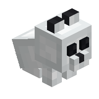

About
The wolf plushie is a decorative block inspired by the various wolf mob variants!
Config
Set Enable Wolf Plushies to Yes/true (default) to use them, or No/false to hide them. All wolf plushies use this option.
Placement
When placing any wolf plushie, it will face the player.
Breaking
Wolf Plushies can be broken with any item or by hand!
Interaction
If a player interacts with a wolf plushie (use item/place block key), it will alternate between sitting and standing.
Crafting Recipe
Pale Wolf Plushie


Craft the pale wolf plushie by placing a bone between 2 black wool in the middle row and three white wool in the top and bottom rows.
Ashen Wolf Plushie

Craft the Ashen wolf plushie by placing 3 light gray wool in the top row; a bone between 2 black wool in the middle row; and 3 white wool in the bottom row.
Black Wolf Plushie

Craft the black wolf plushie by placing a bone between 2 gray wool in the middle row and 3 black wool in the top and bottom rows.
Chestnut Wolf Plushie

Craft the chestnut wolf plushie by placing a bone between 2 black wool in the middle row and 3 brown wool in the top and bottom rows.
Rusty Wolf Plushie

Craft the rusty wolf plushie using 3 brown wool in the top row; a bone between 2 black wool in the middle row; and 3 white wool in the bottom row.
Wolf Plushie


| Renewable | Yes (Crafting) |
| Stackable | Yes (64) |
| Tool | Any tool |
| Blast Resistance | 0.2 |
| Hardness | 0.2 |
| Luminous | No |
| Transparent | No |
| Catches fire from lava | Yes |